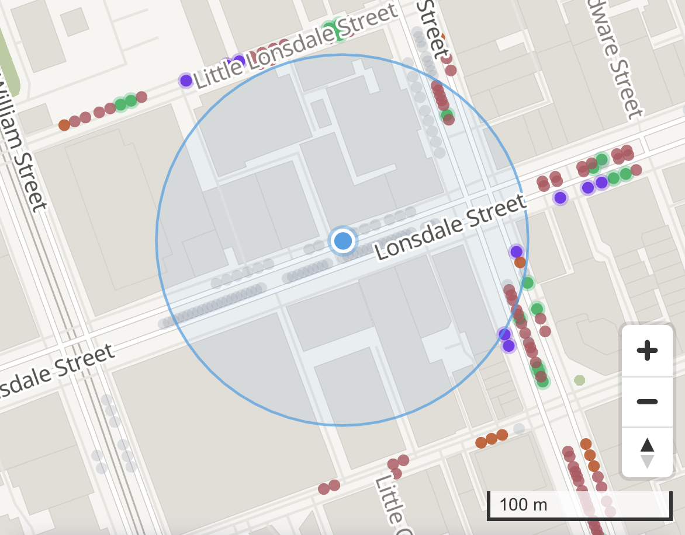
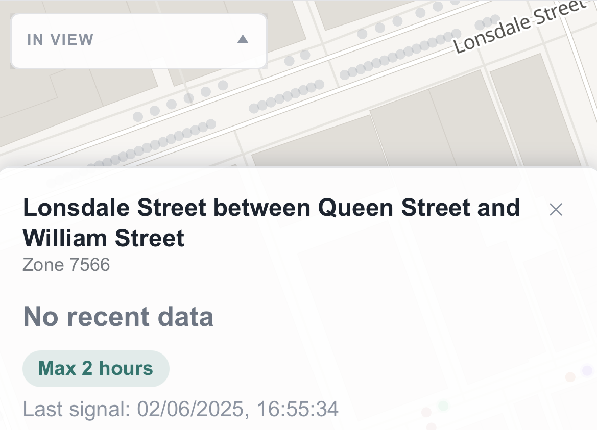
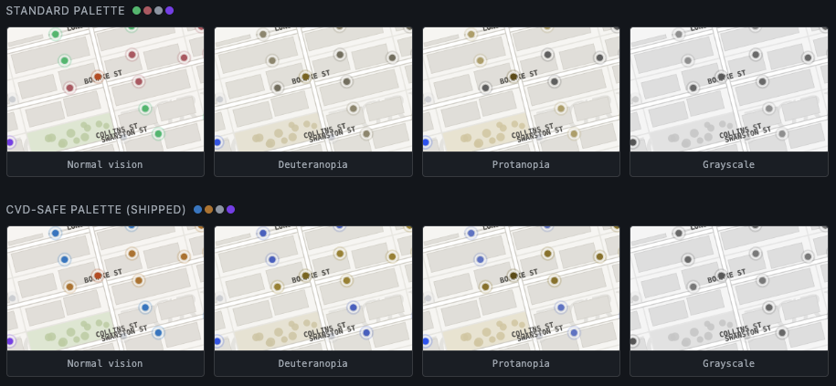
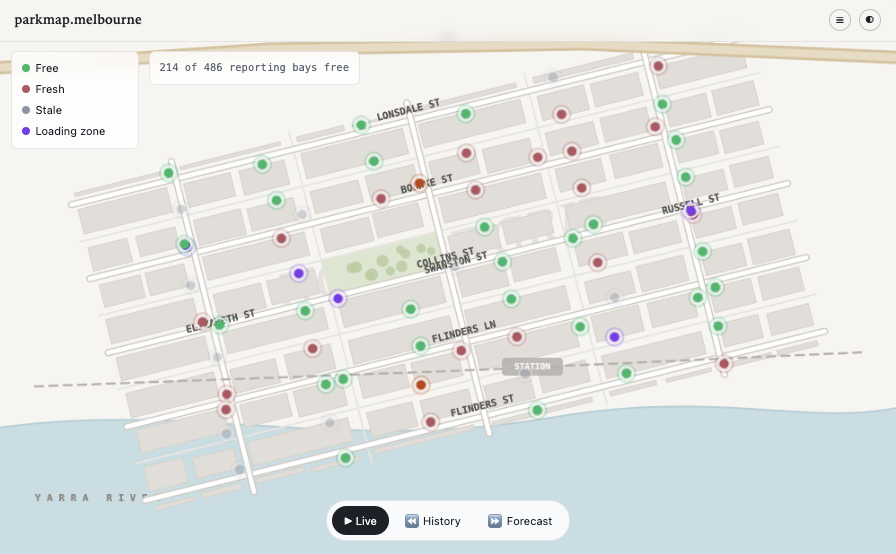
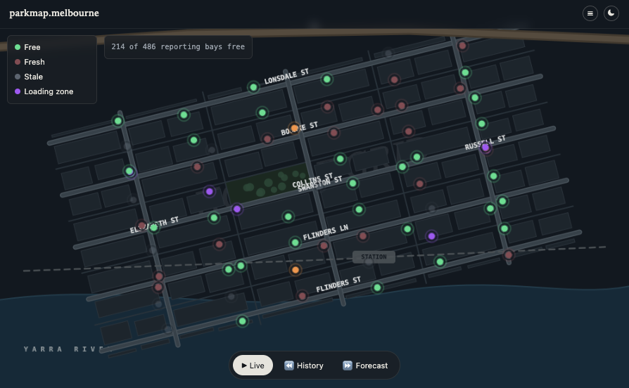

technical deepdive
August 17th, 2026Building parkingmap.melbourne
The City of Melbourne (CoM) publishes a large amount of data about the city, including information from its network of on-street parking sensors.
I wanted to turn that data into something useful: a public map showing current parking availability, recent history, and a forecast of what parking might look like later.
The map is built around three questions: "Where can I park now, how difficult is parking on this street, and where am I likely to find a bay at a particular time?".
A technical deepdive of parkingmap.melbourne - a near real-time view of on-street parking in Melbourne, Australia.
What it is
parkingmap.melbourne maps thousands of on-street parking bays using data from the city's in-ground parking sensors. Click a bay to see its current status, the restriction schedule for its zone, and some nearby alternatives. Scrub backwards to replay seven days of actual parking activity, or look ahead to see a probabilistic forecast of how likely a street is to have a free bay over the next 48 hours.
It isn't a reservation system. The map shows what the sensor most recently reported, how old that reading is, and gives you enough information to decide how much confidence to place in it. That distinction is fundamental to how the application is designed.
It's also a portfolio project: something another developer should be able to understand in about five minutes. More importantly, it demonstrates taking a messy, partially documented government data source and turning it into something useful, without pretending the underlying data is more reliable than it actually is.
Day one: the API
The City of Melbourne (CoM) publishes its parking sensor data as a GeoJSON feed, refreshed approximately every two minutes.
The first problem was understanding the status field. "Present" sounds like it should mean a car is present, so that's how I initially interpreted it. It actually means that the sensor itself is present and reporting — not that the parking bay is occupied.
"Unoccupied" is the value that indicates a free bay. Get that distinction wrong and the entire map is inverted: empty bays look occupied and occupied bays appear available.
There was another, less obvious limitation in the data. It's not really a bug so much as a boundary in what the source can tell us, and the sensible approach is to expose that limitation rather than invent an answer. The occupancy feed identifies each bay using a kerbsideid, while the separate feed containing parking restrictions — 1P, 2P, loading zones, permits and so on — uses a different identifier, bayid. The CoM doesn't publish a relationship between those two IDs.
That means there is no reliable way to say "this exact bay is 2P until 6pm". An application displaying that would be making an assumption and presenting it as fact. What the data does support is a broader zone-level relationship between bays and signage rules. So the map provides a zone-level indication instead: "this area commonly shows 2P, check the sign". It's less precise, but it's something the underlying data can actually support.
Another important discovery from the first week was that roughly half of the sensor network was effectively dead. The data wasn't gradually degrading — sensors tended to either report fresh readings or stop reporting altogether, sometimes for weeks. That became an important constraint on the UI. Rather than displaying a single percentage of available bays, which could imply a level of accuracy that doesn't exist, the map says "based on X of Y bays". Coverage is therefore treated as part of the data itself, rather than something hidden away as a disclaimer.
Here's Lonsdale Street in the map, alongside a photo taken from the same location at roughly the same time.
Every greyed-out dot around the location pin represents a sensor that hasn't detected a vehicle entering or leaving within the last 24 hours. In this case, the underlying data says the last signal was on 02/06/2025.
The real world and the data don't agree.


The stack, and the one part I over-built
The technical stack is fairly straightforward: Next.js on Vercel for the frontend, Supabase with Postgres and PostGIS for the database, Deno Edge Functions running through pg_cron for ingestion, and MapLibre GL for the map. The interesting part isn't really the stack, though. It's what happened with the basemap.
A detailed vector map of central Melbourne means either paying for a tile provider on every request or hosting the tiles yourself. My initial plan was the more conventional self-hosted approach: use Protomaps' open tile format and store the tile archive in a R2 bucket, with separate CORS configuration and another account to manage.
It was perfectly reasonable architecture, also unnecessary. The Melbourne CBD extract the application actually needs is only 7.2MB. That fits comfortably inside Next.js's public/ directory and can be served by Vercel as a normal static asset. No additional infrastructure, account or failure point required. I dropped the R2 setup and kept the simpler solution — a good example of building the sophisticated version first and then discovering that the boring version was better.
How fast is "live" actually
Calling something "live" creates an obvious expectation: a car leaves a bay and the map immediately reflects it. That's not what happens here. In the worst case, the map can be a little over two minutes behind reality. That's not an optimisation I failed to make — rather, a limitation imposed by the source data itself, and it was possible to verify exactly where that delay came from.
A user reported that the map felt several minutes behind. That's actually useful feedback because it gave me something measurable to investigate. I found three separate sources of delay:
- How often the CoM republishes its own feed.
- How often the application's background job checks that feed.
- How long the application caches a response before checking again.
I verified the first one by polling the raw government feed every 20 seconds and watching a timestamp shared across the thousands of sensors. It remained unchanged and then all of them advanced by exactly two minutes each time. The source itself only republishes every two minutes, giving us a hard lower limit on how fresh the data can be.
Two of those delays were application overhead. The two-minute delay from the government feed wasn't something I could improve, so I deliberately left it alone. Polling the source more frequently wouldn't produce newer data — it would simply generate roughly four times as many requests and four times as much stored history while producing the same value on screen. Establishing that first meant I could avoid "optimising" something that couldn't actually be improved.
Making the map look honest
The visual design went through more failed iterations than I expected. Most of the problems weren't really aesthetic. They came from the same recurring issue: something could look perfectly reasonable in isolation while communicating the wrong thing once it was placed on the actual map.
Here's an early design draft



The dot colours are effectively making a claim. Free bays are the only fully saturated colour because they're the information most worth acting on. Occupied bays are dimmer, while stale readings fade almost completely. Colour isn't used as the only indicator either — brightness and a glow ring reinforce the same meaning, while a dedicated colour-blind mode replaces the palette with blue, red and yellow consistently across live, rewind and forecast views.
The search-radius ring is also based on actual geography. It's calculated using metres on the ground rather than the map engine's default pixel-based radius, which would represent a different real-world distance at different zoom levels. Again, something can look correct until you check what it is actually communicating.
Three ways to look at the map
The map has three modes, each designed around a different question.
Live shows the latest sensor reading for each bay, with the freshness of that reading checked when the map is rendered.
Rewind replays the previous seven days of observed activity. Drag the scrubber and watch actual parking events play back across the CBD. It uses the same palette as the live view rather than the forecast gradient because it's displaying events that actually happened.
Forecast works in the opposite direction. Choose a future hour and each street is coloured according to the probability of finding a free bay there, based on how that street has historically behaved at that particular time and day. The forecast uses a separate gradient so it can't easily be confused with a live reading. Where there isn't enough historical data to make a useful prediction, the street is shown in grey instead of producing a misleadingly confident result.
Building a forecast without pretending a guarantee
After roughly six weeks of collecting history, there was finally enough data to make forecasting worthwhile. The question I wanted to answer was simple: “I’m arriving at 2pm. Can I expect to find a park on this street, and how difficult is it likely to be?” The first implementation was relatively simple, but it became increasingly slow as the historical dataset grew. Instead of comparing every possible time against the entire history, I changed the model to focus on how long each bay typically remained free or occupied. That approach was considerably faster and simpler to operate, while also giving the forecasting layer a better foundation.
Forecasting also exposed another problem in the underlying data. Some sensors had stopped reporting months earlier, but their final readings were still present in the historical dataset.
Without a cutoff, those old readings could be interpreted as if the sensors were still behaving that way, artificially increasing confidence in the forecast.
When I inspected the results, 102 of 239 street segments were being classified as “reliable”, but some of that apparent reliability was coming from sensors that hadn't reported for an entire year.
I changed the system to only consider recent history, eventually settling on a 30-day window. That prevents inactive sensors from making an area appear more predictable than the available data actually justifies.
The output remains a forecast, not a guarantee, and is presented as such.
Rewind mode, where does code actually run?
Rewind mode works like a seven-day video of parking activity. Drag the scrubber and watch bays across the CBD change between free and occupied. To do that, the system first has to assemble a complete week's worth of parking changes before anything can be sent to the browser.
The first implementation took around 14 seconds to complete. That was acceptable during development, but obviously too slow for an interactive feature. After restructuring how the data was stored and processed, I brought the response down to roughly two seconds and shipped it.
It immediately started failing in production.
The query itself wasn't the problem. I had tested it in a different environment from the one serving the actual site. The SQL editor effectively allowed the query to run without a meaningful time limit, while the production API had an 8-second timeout. Something that looked completely fine during development could therefore still be terminated before it finished for a real user.
A useful lesson. Both environments were connected to the same database and running the same query, which made the difference particularly easy to overlook.
I fixed the immediate issue by improving the database setup and brought the real API response down to a consistent 2.6 seconds.
A few weeks later, the number of parking sensors doubled — more on that shortly — and the same operation had grown back to somewhere between 10 and 16.5 seconds. Once again, it was too slow to be useful.
At that point, I stopped trying to make the calculation itself faster. The bigger issue was that I was performing a large amount of work every time somebody opened Rewind mode. As the dataset continued to grow, there was no guarantee that another round of optimisation would keep it fast enough.
Instead, I moved the expensive work out of the user request entirely. A background job now prepares the complete seven days of data every five minutes and stores the finished result. When someone opens Rewind mode, the application only needs to retrieve that prepared data.
The important optimisation wasn't making the query faster. It was changing when the expensive work happened: do the heavy lifting in the background, rather than making every user wait for it.
The night the data source doubled itself
Overnight, the sensor feed jumped from 3,388 records to 6,324 — an 87% increase.
I didn't immediately assume the new data was correct. After checking it, I found that the new sensors contained historical readings dating back as far as 2022. That suggested these weren't newly installed sensors, but existing sensors that had simply become available through the public feed.
Fortunately, the system had been designed without assuming a fixed number of sensors. The additional records therefore required no code or database changes.
The immediate impact was mostly a handful of outdated numbers on the About page that needed to be updated. The more significant consequence came later, when the larger dataset exposed another performance problem in Rewind mode.
Two incidents where "it says it succeeded" was the whole bug
Two incidents, separated by several months, ended up teaching me the same lesson: a system reporting success doesn't necessarily mean the thing you wanted actually happened.
The first involved a nightly job responsible for refreshing parking restriction data such as 1P, 2P and loading zones. For more than five weeks, the job reported a successful run every night. It wasn't actually succeeding. An old placeholder where a real access key should have been meant every request was rejected, so the restriction data never changed. The city's parking information had quietly become more than five weeks out of date while the system continued reporting everything as normal.
The second incident was more serious. I had made several changes intended to prevent public access to sensitive database resources. Each change appeared to work, but a later check showed that the access was still available. In the worst case, a user could potentially have deleted an entire live data table with a single request.
Fixing it required more than changing another permission. I had to understand why the previous fixes weren't sticking, including a default setting that was silently restoring the same access whenever new database objects were created. Fixing that underlying behaviour meant the problem couldn't simply reappear the next time something was added.
Neither incident produced an obvious warning. Both were caught by the same principle: don't trust a "success" message — verify that the outcome you actually wanted has occurred.
A bug that wasn't a bug
Not every issue was serious. Some were just weird.
A user reported that the light/dark mode toggle disappeared when the site was in dark mode. It initially looked like a CSS problem, but the actual cause was much stranger: the operating system was rendering the yin-yang icon as a small fixed-colour image instead of an element that Parkmap could style.
Once I understood the cause, the fix was simple. About five minutes later, the icon had been replaced with a small inline SVG that Parkmap could control directly.
Where it stands
Parkmap is live today and continues to update from Melbourne's parking sensor feed every two minutes. It now includes live availability, a short-term forecast and seven days of scrubbable history, along with a colour-blind-friendly mode, location-aware search and map markers that only cluster available spaces — because a cluster of unavailable bays isn't particularly helpful when you're trying to find somewhere to park.
There are still a few things that need work, and they're deliberately visible rather than hidden: some access permissions need further tightening, error monitoring hasn't been implemented yet, and log retention still needs to be configured.
Database changes are also intentionally manual. However confident I am in a change, I write it out, review it and apply it myself rather than allowing the system to make database changes automatically.
That's been the rule since the beginning: don't call something done until you've actually checked it.